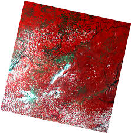
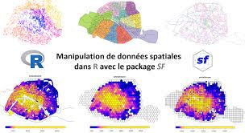
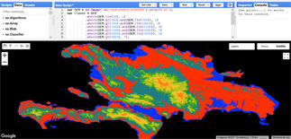
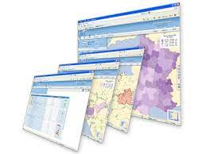
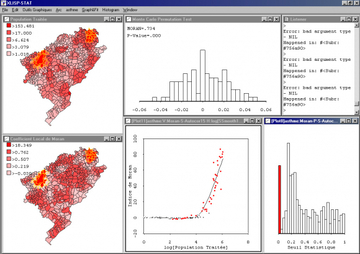

Système d’Information Géographique (SIG) sous Quantum GIS (QGIS)
Système d’Information Géographique (SIG) sous ArcMap/ArcGIS
Système d’Information Géographique (SIG) sous ArcGIS Pro

Imagerie et Télédétection sous Envi et QGIS
Système d’Information Géographique (SIG) Appliqué à Santé Publique (SIG SP)

Science des Données Géospatiale (SDG)
SIG et Analyse Géospatiale sous Python
Analyse Spatiale et Télédetection sous Google Earth Engine (GEE) et JavaScript (JS)
Architecture et Base de Données SIG
Analyse Spatiale et Etude Géomarketing
Développement WebSIG
Developpement Géospatial Full_Stack
Enquêtes et Informatique Appliquée au Suivi-Evaluation
Analyse et visualisation de données
Statistique Spatiale (SS)

[statistics] Champ d’étude concernant les méthodes statistiques qui utilisent l’espace et
les relations spatiales (comme la distance, la zone, le volume, la longueur, la hauteur, l’orientation,
la centralité et/ou d’autres caractéristiques spatiales des données) directement dans leurs calculs mathématiques.
Les statistiques spatiales sont utilisées pour de nombreux et différents types d’analyses,
y compris l’analyse des formes, la modélisation des surfaces et la prévision des surfaces,
la régression spatiale, les comparaisons statistiques des jeux de données spatiaux,
la modélisation statistique et la prévision d’interaction spatiale, etc
Big Data Spatiale (BDS)
Les mégadonnées spatiales – qu’il s’agisse de contenus géocodés nativement, de métadonnées géographiques ou de données faisant elles-mêmes référence à des espaces et des lieux – sont devenues une présence omniprésente dans les espaces et les pratiques de la vie quotidienne.
Au-delà des préoccupations liées à la « géolocalisation » et à la cartographie du contenu géocodé des médias sociaux, ce numéro thématique spécial explore ce que signifie rencontrer et expérimenter le Big Data spatial en tant que phénomène quotidien qui est à la fois spatial,
caractérisé par et mettant en œuvre des spatialités matérielles, et spatialisation, configurer les relations entre les sujets, les objets et les espaces de manière nouvelle et sans précédent.